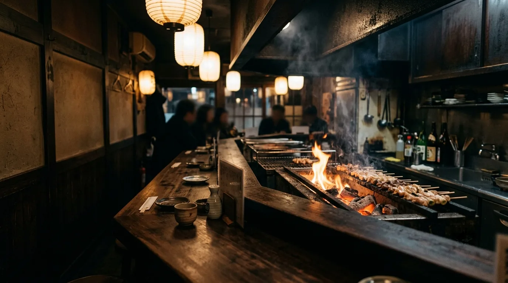
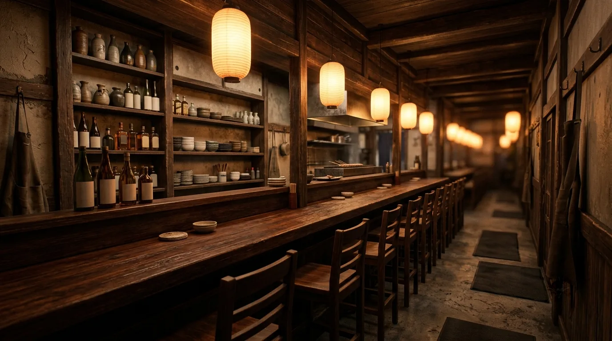
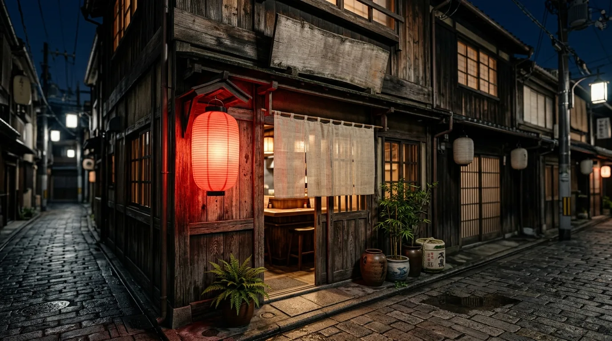

おまかせ盛り合わせ（6本）
まずはこの一皿から、店の味を。
串ごとに変える¥1,380

火床 三 ／ 強火炭にいちばん近い段
備長炭の火加減だけを見ながら、一本ずつ丁寧に焼き上げています。強すぎず、弱すぎず。串と向き合う時間を大切にしています。
炭からの距離で、焼き方が変わる。このサイトも同じ順で並んでいます。
備長炭の火加減だけを見る
串と向き合う時間を、
いちばん大切にしています。
備長炭の火加減だけを見ながら、一本ずつ丁寧に焼き上げています。強すぎず、弱すぎず。炭が落ち着くのを待ってから、はじめの一本を置きます。

数は多くありません。その分、一本ずつ。
まずはこの一皿から、店の味を。
串ごとに変える¥1,380

旨みそのままの、ジューシーな一本。
強火（火力の目安：強火）¥260

刻んで、練って、丁寧に一本。
中火（火力の目安：中火）¥280
店の様子




カウンターの向こう側

炭の前に立って、
火が落ち着くのを待つ。
カウンター越しに炭火の音と香りを感じながら、ゆっくりと過ごしていただける時間を。仕事帰りの一杯にも、ふらりと立ち寄る一軒としても。
その日に焼いた串と、店の様子を Instagram に上げています。